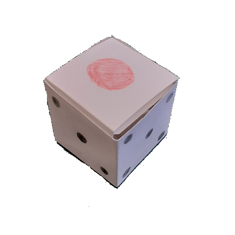
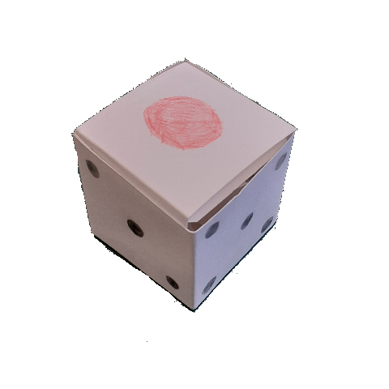

一面ダイス カートに入れる
4980￥+税
「神はサイコロを振らない」
かの有名な偉人が言ったように、自分の運命を運に任せるのではなく、自分で決断してゆこうという思いが込められたアーティファクト。
GMに1d1を振れと言われた際のカウンター用にも。
TRPGプレイヤーなら一つは持っておきたい品が、指輪型でどこへでも持ち運べる形で登場。
かの有名な偉人が言ったように、自分の運命を運に任せるのではなく、自分で決断してゆこうという思いが込められたアーティファクト。
GMに1d1を振れと言われた際のカウンター用にも。
TRPGプレイヤーなら一つは持っておきたい品が、指輪型でどこへでも持ち運べる形で登場。